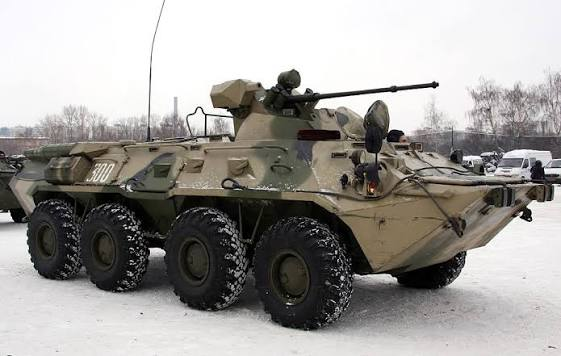
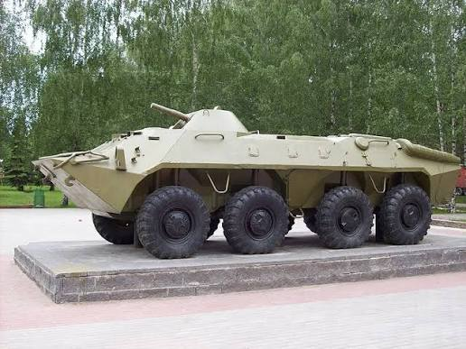
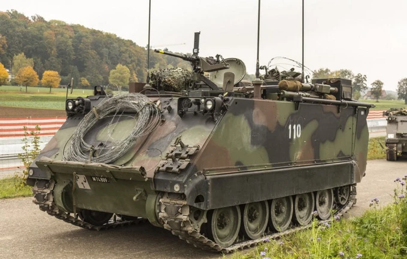
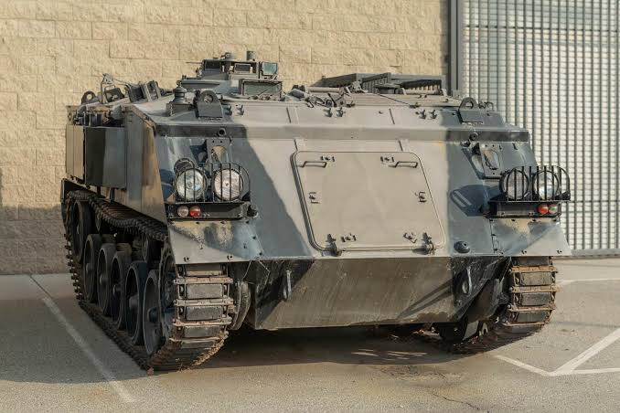
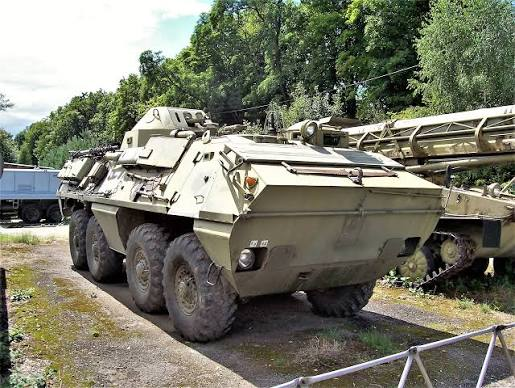

Available APCs
Reliable Cold War troop carriers built for mobility and protection.
BTR‑80

Eight‑wheeled Soviet APC known for speed, amphibious capability, and rugged design.
BTR‑70

Earlier Soviet APC with twin engines and strong off‑road performance.
M113

Iconic American APC used worldwide for decades due to its simplicity and reliability.
FV432

British APC designed for mechanized infantry operations with excellent battlefield endurance.
OT‑64 SKOT

Czechoslovak‑Polish APC with strong armor and amphibious capability.